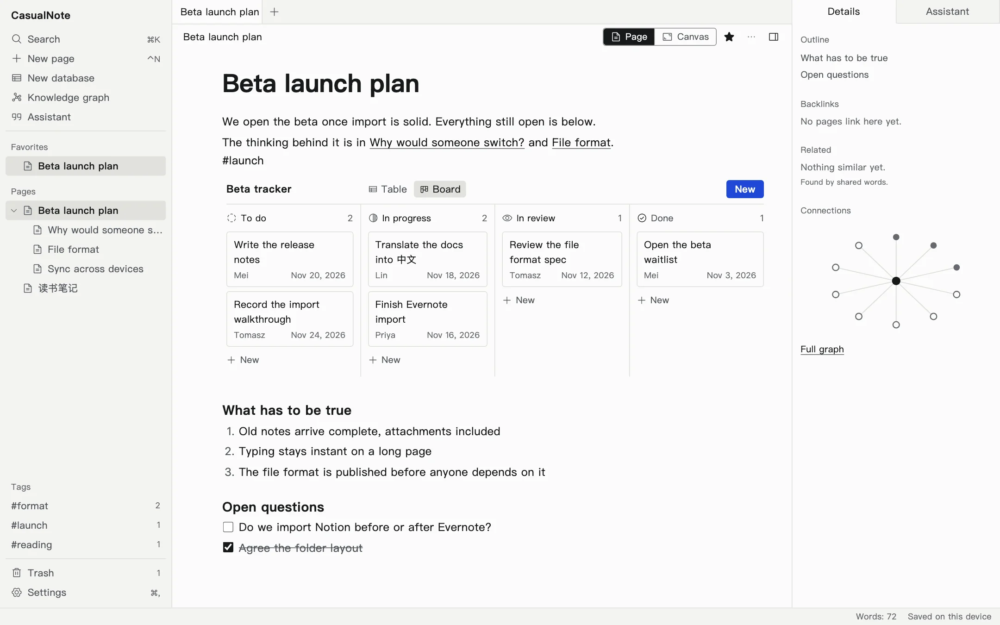
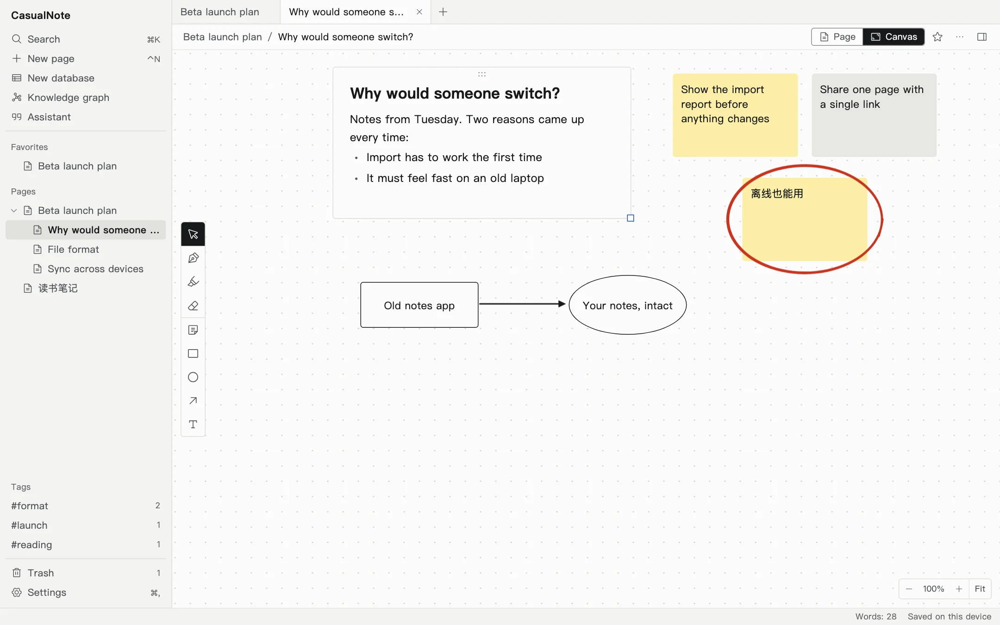
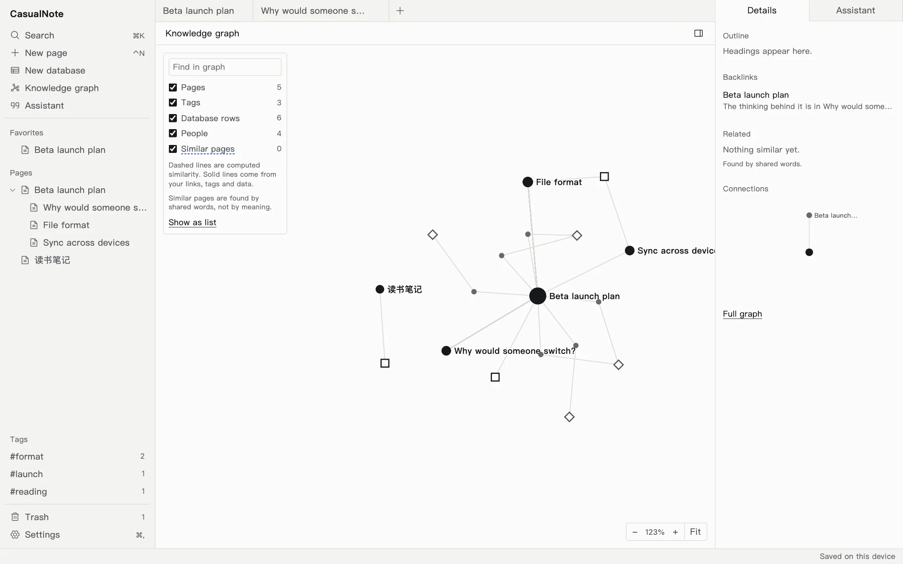
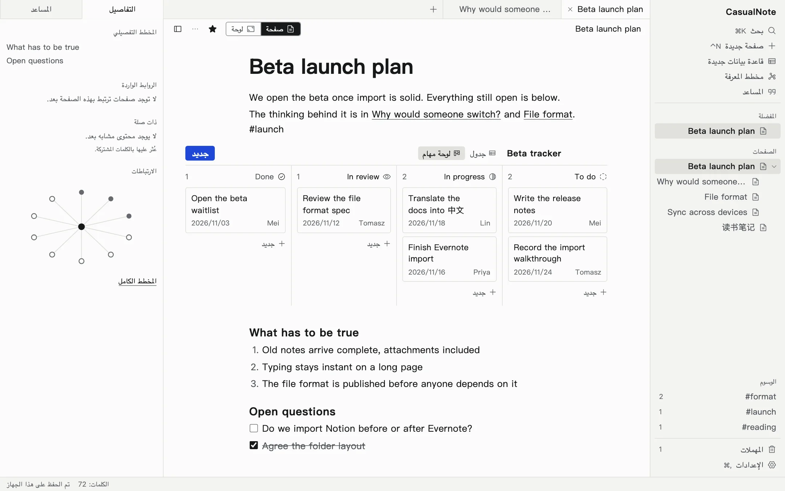

Write in any language.
Keep every word.
Documents, databases, canvas and pen, on your machine, under a licence that stays open.
This page takes ink. Draw on it.
Write it.
Slash commands, Markdown, links and backlinks, with tables and boards right inside the page.
Lay it out.
One switch turns the page into a canvas. Your text stays editable beside sticky notes, shapes and pressure-aware ink.
See how it connects.
A knowledge graph worked out from your pages, tags, tasks and people, so it always agrees with them.
Make it yours.
The whole interface follows your language. In Arabic it mirrors, down to the menus and icons.




Your language is not a translation.
Input methods, right-to-left layout and search are requirements in every script. Your words stay exactly as you wrote them.
离线也能用，笔记归你所有。
Interface translations are drafts until native speakers review them.
AI that asks first.
It cannot change a note until you approve. Each change shows what it will do and what it read, and undoes in one step.
Connect Anthropic or anything OpenAI-compatible with your own key. Nothing is sent until you do.
Other tools can connect through MCP and use the same set of tools.
Launch checklist
Write the release notes
Record the import walkthrough
Translate the docs
Turn these into tasks
Change 3 blocks into tasks
Read: Launch checklist
Sent to: your provider
Leave whenever you like.
Export is one documented file with plain Markdown inside. A small script that needs nothing from us can check and unpack it.
- manifest.jsonevery file, with its hash
- pages/your blocks
- databases/tables and boards
- ink/every pen stroke
- readable/Beta launch plan.mdplain Markdown
- readable/读书笔记.mdyour filenames, in your script
Where it stands today.
Works in your browser
Writing, links, databases, canvas and pen, search, knowledge graph, export and import, six interface languages.
Not fast enough yet at huge sizes
- 174 ms
- typing on a 5,000-block page, against a 16 ms target. At 300 blocks: 11.7 ms
- 223 ms
- search across 100,000 pages, against 50 ms
A simulated five-year history also crashed the merge library. Fixing that comes first.
New, and lightly tested
Durable storage and encrypted folder sync, whose encryption has had no outside review. Search by meaning. The assistant, so far tried only against a stand-in provider.
Being built
The desktop app with local models. An early macOS build runs, and no real model has been through it yet. Then mobile, and a self-hosted server.
Apache-2.0.
All of it.
The engine, the apps and the server to come. No enterprise edition and no licence key.
Try it in your browserEarly and unreleased. Your notes stay in your browser, so keep an export of anything you care about.